핵심 요약
DROID-W는 DROID-SLAM을 실세계 동적 RGB 환경으로 확장하기 위해, multi-view feature inconsistency에서 pixel-wise uncertainty를 추정하고 이를 differentiable BA 안에 넣는 SLAM 시스템이다.
DROID-W의 핵심은 동적 영역을 명시적으로 segment해서 버리는 것보다, 어떤 pixel을 BA에서 얼마나 믿을지 결정하는 uncertainty를 optimization loop 안에서 함께 갱신한다는 점이다.
Uncertainty-aware BA
dynamic/static inconsistency가 큰 pixel의 BA 영향력을 낮춰 pose와 geometry update를 안정화.
Feature Inconsistency
multi-view visual feature similarity를 이용해 per-pixel dynamic uncertainty를 추정.
DROID-W Dataset
도심 outdoor, YouTube video, reflections, shadows, small dynamic objects 등 in-the-wild 조건 포함.
Real-time RGB SLAM
DROID-SLAM 기반 실시간 tracking/mapping에 uncertainty optimization을 결합.
DROID-W는 ‘무엇을 동적 객체로 보고 제거할까’보다, BA가 어떤 관측을 얼마나 믿어야 하는가를 묻는다. 그래서 dynamic SLAM을 segmentation 문제가 아니라 weighted optimization 문제로 다시 읽게 만든다.
정적 장면에 강한 기준선
DBA 기반 pose-depth update는 강력하지만, 동적 객체와 feature inconsistency가 큰 장면에서 흔들릴 수 있음.
hard filtering 기반 처리
동적이라고 판단한 관측을 제거하거나 masking하지만, 사전 class, segmentation 품질, geometry threshold에 영향을 받을 수 있음.
uncertainty 기반 신뢰도 조절
dynamic 여부를 hard mask로 끝내지 않고, BA objective 안에서 pixel별 영향력을 조절.
논문 상세 정리
아래부터는 기존 논문 내용을 최대한 담은 상세 해석이다. 핵심 흐름에서 벗어나는 배경지식, notation, 부가 자료는 접어두었다.
Problem: dynamic scene에서 무엇이 깨지는가
DROID-W의 문제 제기는 단순하다. 기존 SLAM은 correspondence가 같은 rigid scene을 본다고 가정하지만, in-the-wild video에서는 사람, 차량, 반사, 그림자, 작은 동적 객체가 이 가정을 계속 깨뜨린다.
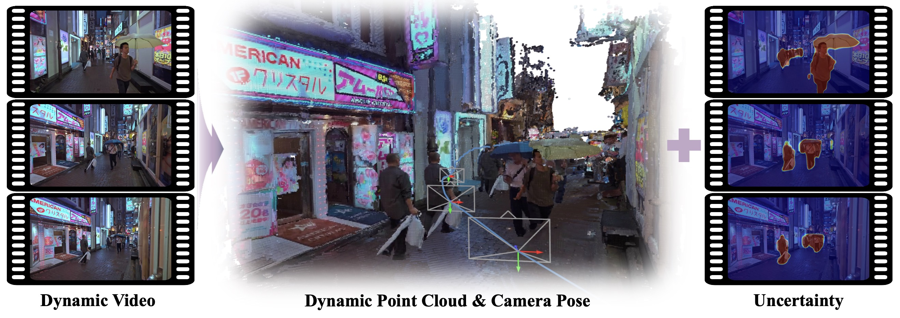
논문은 dynamic SLAM을 “무엇을 지울까”보다 “어떤 관측을 얼마나 믿을까”로 재정의한다.
DROID-SLAM의 DBA는 rigid correspondence가 안정적일 때 강력.
residual과 feature alignment가 실제 camera motion과 어긋남.
사전 class, segmentation quality, object boundary에 민감.
각 pixel residual의 신뢰도를 uncertainty로 최적화.
초록, 도입부, 관련 연구는 모두 관측 신뢰도를 BA 안에서 조절해야 한다는 주장으로 모인다.
| 문제 축 | 기존 접근의 병목 | DROID-W의 관점 |
|---|---|---|
| Unknown dynamics | 사전 dynamic class나 segmentation failure에 민감 | multi-view feature inconsistency로 uncertainty 추정 |
| Optimization | dynamic residual이 pose/depth update를 흔듦 | uncertainty-aware BA로 residual 영향력 조절 |
| Real-world RGB | 도심, YouTube, 반사, 그림자, 작은 객체가 동시에 등장 | DROID-W dataset과 web video로 stress test |
관련 연구 계열 자세히 보기
세부 연구들은 “dynamic을 어떻게 찾는가”와 “SLAM objective에 어떻게 반영하는가”로 나누면 논문의 위치가 선명해진다.
large residual이나 frame-to-model alignment로 dynamic region을 추정.
DynaSLAM/DS-SLAM처럼 detector/segmentation network로 dynamic object 제거.
Co-Fusion, MaskFusion 계열처럼 독립 object를 추적/복원.
dynamic/static ambiguity를 weight나 uncertainty로 BA에 반영.
문헌 흐름의 핵심은 dynamic 영역을 무조건 지우는 대신, BA에서 신뢰도를 낮춰 geometry를 살릴 수 있는가로 이어진다.
| 문헌군 | 얻는 점 | DROID-W와의 연결 |
|---|---|---|
| Residual / geometry cue | unknown dynamic object도 class prior 없이 포착 가능 | reprojection / flow inconsistency를 uncertainty 신호로 해석 |
| Segmentation cue | 사람, 차량처럼 명확한 movable class를 빠르게 제거 | masking 의존을 줄이고 soft weighting으로 대체 |
| Object-level mapping | 독립 object motion을 더 직접적으로 모델링 | 실시간 monocular SLAM에서는 비용과 추적 안정성이 부담 |
| Differentiable BA | learned update와 optimization을 함께 사용 | DROID-SLAM 구조 위에 dynamic uncertainty를 끼워 넣는 근거 |
Mechanism: uncertainty-aware BA로 어떻게 푸나
앞에서 정의한 문제는 dynamic object가 correspondence residual을 흔든다는 점이다. DROID-W는 이를 object 제거 문제가 아니라 BA가 각 관측을 얼마나 믿을지 조절하는 문제로 바꾸고, uncertainty를 pose-depth optimization 안에 넣는다.

논문은 static-scene DROID-SLAM을 출발점으로 삼고, dynamic uncertainty를 BA와 번갈아 최적화해 in-the-wild video에서도 tracking과 geometry를 안정화한다.
| 구간 | 무엇을 해결하나 | 핵심 장치 |
|---|---|---|
| Preliminaries | DROID-SLAM의 pose, inverse depth, frame graph, DBA 구조를 베이스라인으로 사용 | rigid correspondence와 Gauss-Newton 기반 pose-depth update |
| Uncertainty-aware BA | dynamic object가 만드는 unreliable residual이 BA를 흔드는 문제 완화 | pixel-wise uncertainty를 Mahalanobis weight에 반영 |
| Uncertainty optimization | reprojection residual만으로 dynamic region을 판단하기 어려운 문제 보완 | FiT3D/DINOv2 feature similarity와 logarithmic prior |
| SLAM system | 실시간 video stream에서 초기화, tracking, local/global BA를 안정적으로 운용 | Metric3D depth prior, local uncertainty update, global pose-depth BA |
이 논문에서 중요한 선택은 dynamic object를 binary mask로 제거하지 않고, residual weight를 연속적으로 조절하는 것이다.
사전 class나 segmentation mask에만 의존.
feature inconsistency에서 uncertainty를 만들고 BA에 삽입.
unknown dynamic object도 soft하게 downweight.
논문은 먼저 DROID-SLAM의 기본 상태를 그대로 가져온다. 각 frame의 pose와 inverse depth로 rigid correspondence를 만들고, predicted correspondence와의 residual을 confidence map으로 weighted BA에 넣는다. 이 출발점이 있어야 DROID-W의 변화가 “새 SLAM을 만든 것”이 아니라 DROID-SLAM의 DBA를 dynamic scene에 맞게 바꾼 것임이 분명해진다.
Eq. (1)은 현재 pose/depth가 다른 frame에서 어디로 투영되는지를 정의하고, DROID-SLAM BA objective와 Eq. (2)-(3)은 이 residual로 pose update 와 disparity update 를 푸는 절차를 보여준다. DROID-W는 이 구조를 버리지 않고 residual의 covariance를 uncertainty-aware 형태로 바꾸는 쪽을 택한다.
dynamic object는 rigid-motion assumption을 깨기 때문에, 같은 residual이라도 static background의 residual과 동일하게 믿으면 BA가 잘못된 방향으로 움직일 수 있다. DROID-W는 per-pixel dynamic uncertainty 를 두고, uncertainty가 큰 관측의 영향력을 낮추는 weighted Mahalanobis term을 사용한다.
Eq. (4)는 confidence 에 uncertainty를 곱해 covariance를 다시 정의하고, Eq. (5)는 그 weight로 pose와 depth를 최적화하는 objective다. 중요한 점은 object를 hard mask로 제거하지 않고, residual을 soft하게 덜 믿는 방향으로 BA 안에 넣는다는 것이다.
큰 dynamic motion에서는 reprojection error 자체가 불안정할 수 있다. 그래서 논문은 FiT3D로 refined된 DINOv2 feature를 사용해 multi-view feature similarity를 측정하고, view 간 feature consistency가 낮은 지점을 dynamic uncertainty의 근거로 삼는다.
Eq. (6)은 대응 feature의 cosine similarity가 낮을수록 uncertainty cost가 커지도록 만들고, Eq. (7)-(8)은 모든 uncertainty를 무한히 키워 residual을 무시하는 trivial solution을 막는다. 즉 uncertainty는 “동적일 것 같은 곳을 크게 잡는 변수”이면서 동시에 prior로 제어되는 최적화 변수다.
uncertainty를 pose/depth와 함께 Gauss-Newton으로 직접 풀면 계산량과 불안정성이 커진다. DROID-W는 pose-depth refinement와 uncertainty optimization을 번갈아 수행하고, DINOv2 feature에서 uncertainty로 가는 local affine mapping을 학습해 작은 window 안에서 uncertainty가 과도하게 흔들리지 않도록 한다.
Eq. (9)는 affine mapping parameter 를 gradient descent와 weight decay로 업데이트하는 과정을 나타낸다. 이 설계 덕분에 uncertainty는 dense SLAM state처럼 반복적으로 개선되지만, global BA 단계에서는 local regularizer의 역할을 넘지 않도록 freeze된다.
시스템은 DROID-SLAM처럼 충분한 motion을 가진 12개 keyframe으로 초기화한다. 다만 dynamic scene에서는 constant disparity 초기값이 tracking을 불안정하게 만들 수 있으므로, Metric3D의 metric monodepth를 disparity regularization으로 사용해 초기 pose-depth optimization을 보강한다.
이후 새 keyframe이 들어오면 local BA와 uncertainty update를 sliding window 안에서 수행한다. frontend tracking에서는 pose, disparity, uncertainty를 함께 갱신하고, tracking 이후 global BA는 모든 keyframe의 pose와 disparity를 정리하되 dynamic uncertainty parameter는 고정한다. 결과적으로 DROID-W의 방법론은 depth prior로 초기화를 안정화하고, uncertainty-aware BA로 dynamic residual을 낮추며, global BA로 전체 trajectory를 정리하는 흐름으로 읽으면 된다.
이 방법론에서 가장 중요한 선택은 dynamic object를 binary mask로 버리지 않고, correspondence의 신뢰도를 연속적인 uncertainty로 만들어 BA 안에 남기는 것이다.
dynamic object가 rigid correspondence residual을 왜곡해 camera pose와 depth update를 흔듦.
feature inconsistency 기반 uncertainty를 residual weight로 사용해 unreliable observation의 영향 축소.
pose-depth refinement와 uncertainty optimization을 번갈아 수행하고, global BA에서는 pose/depth만 재정리.
Evidence: 어떤 claim을 검증했나
평가는 DROID-W의 핵심 claim을 어떤 근거로 확인했는지 따라가면 읽기 쉽다. tracking과 qualitative reconstruction은 핵심 평가 task이고, runtime, ablation, dataset 구성은 설계 타당성을 보강하는 추가 근거다.
핵심 평가와 보조 근거를 분리하면, 각 표와 그림이 어떤 claim을 지지하는지 더 빠르게 읽힌다.
| 평가 축 | 근거 | 확인할 것 |
|---|---|---|
| Tracking robustness | Table 1-4: Bonn, TUM, DyCheck, DROID-W | Bonn에서는 전체 baseline 중 bestTUM은 평균 best/second-best, DyCheck와 DROID-W outdoor에서도 복잡한 동적 환경 안정성 확인 |
| Qualitative geometry | Fig. 3-4 | Fig. 3: coherent uncertainty mapFig. 4: scale drift/noisy distractor를 줄인 reconstruction |
| 근거 축 | 근거 | 확인할 것 |
|---|---|---|
| Runtime | Table 5 | RTX 3090/16-core 기준 약 10 FPSWildGS-SLAM 대비 40× speedup. DINOv2/Metric3D 비용으로 DROID-SLAM보다는 느림 |
| Ablation | Table 6 | Full system이 모든 variant보다 우수uncertainty-aware BA 제거가 가장 큰 성능 저하를 만들고, decouple/affine/weight decay도 안정성에 기여 |
| Custom Dataset | Table 7-9 | Downtown 1-7: 정량 ATE 평가YouTube videos: 정성 reconstruction / uncertainty stress test |
논문 본문은 정량 tracking, uncertainty map, reconstruction, runtime, ablation을 서로 다른 claim의 근거로 해석한다.
Bonn/TUM/DyCheck/DROID-W에서 DROID-SLAM 대비 dynamic scene robustness 확인.
uncertainty map이 dynamic distractor를 어디서 낮게 신뢰하는지 확인.
WildGS-SLAM보다 빠르게 동작한다는 실시간성 claim 확인.
각 설계 요소가 tracking 성능에 미치는 영향 분리.
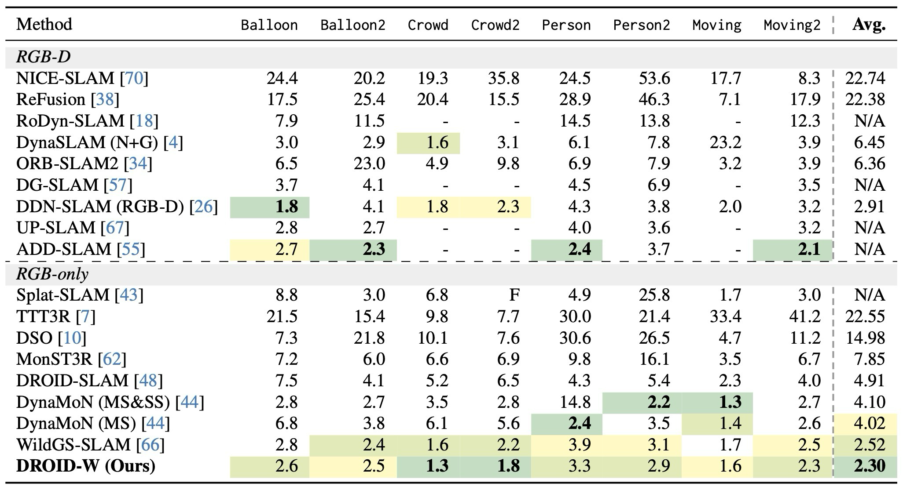
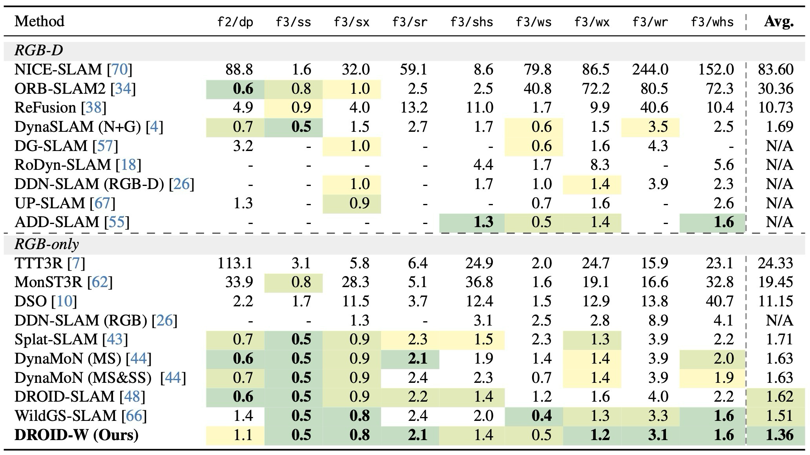
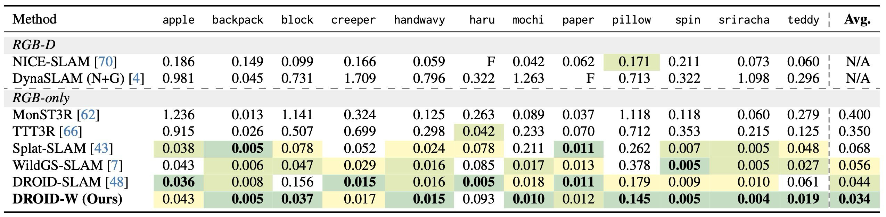
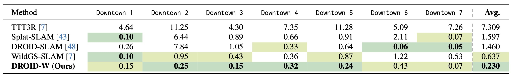
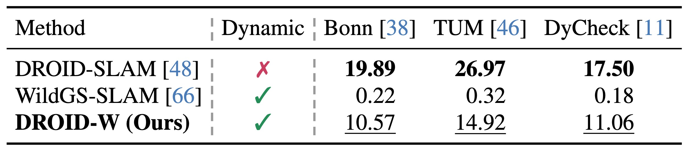
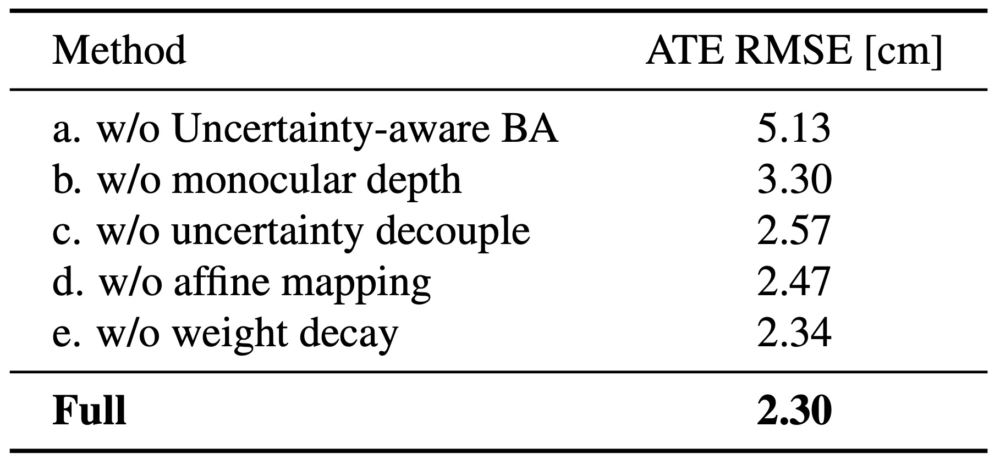
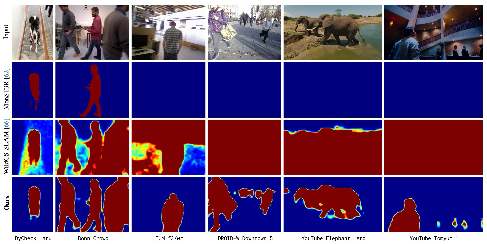
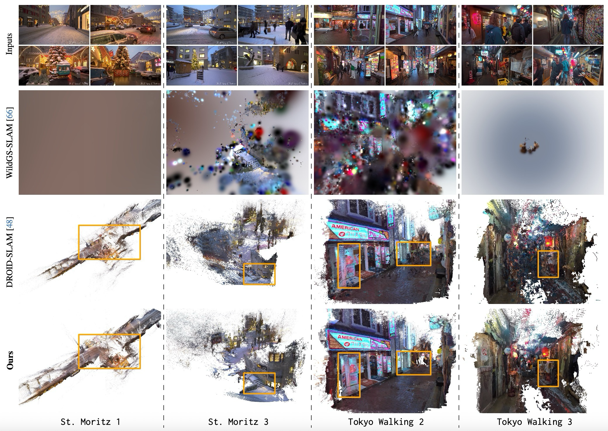
DROID-W dataset은 정량 tracking을 위한 outdoor sequence와 정성 검증을 위한 YouTube video를 분리해 제공한다. 본문에서는 평가에서 직접 필요한 역할만 먼저 보고, sensor/GT 세부 조건은 토글에서 확인한다.
Downtown 1-7로 구성된 outdoor RGB sequence. 일부 sequence는 RTK, 일부는 LiDAR-inertial reference trajectory로 ATE를 평가한다.
역할: 실제 도심 dynamic RGB SLAM에서 tracking robustness 확인.crowd, reflection, moving object, moving camera 조건이 섞인 web video sequence.
역할: ground-truth trajectory보다 uncertainty map과 reconstruction 품질 확인.Dataset / GT 세부 조건 보기
정량 benchmark와 정성 stress test를 분리해서 보면, 어떤 표가 어떤 평가 역할을 맡는지 명확해진다.
| 구분 | 포함 내용 | 평가 역할 |
|---|---|---|
| DROID-W Downtown |
| outdoor dynamic RGB SLAM의 ATE 비교 |
| YouTube videos |
| uncertainty map과 reconstruction의 정성 비교 |
RTK가 없는 Downtown 1-2에서는 FAST-LIVO2 trajectory를 reference로 사용하므로, 논문은 RTK가 있는 구간에서 FAST-LIVO2의 오차를 별도로 제시한다.
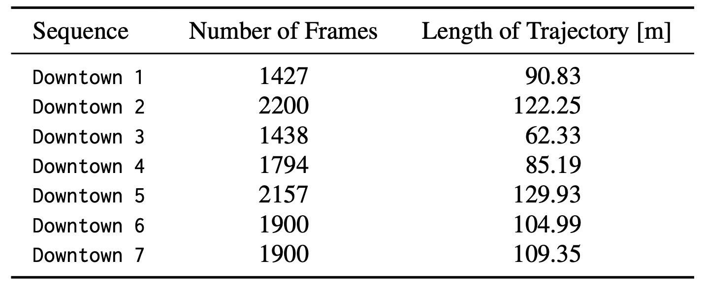
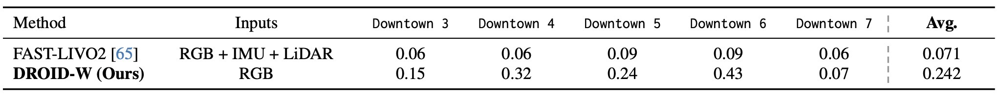
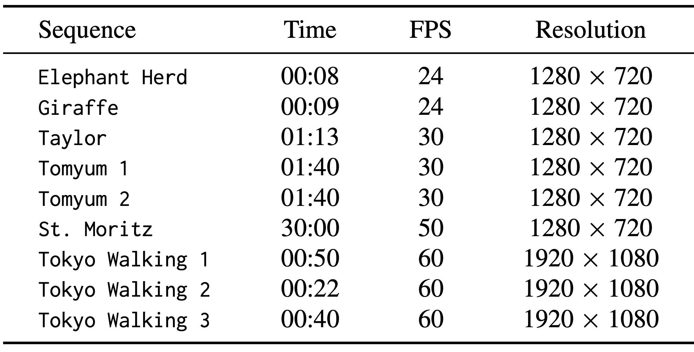
Usage / Limits: 언제 쓰기 좋은가
DROID-W는 동적 영역을 완전히 제거하기보다 관측 신뢰도를 조절해야 하는 RGB SLAM 상황에 잘 맞는다. 반대로 초기 pose가 불안정하거나 frame-to-frame alignment 자체가 약하면 uncertainty estimation도 함께 흔들릴 수 있다.
논문 결론과 한계는 적용 조건을 이렇게 정리할 수 있다.
| 구분 | 정리 | 이유 |
|---|---|---|
| 잘 맞는 상황 | unknown dynamic object가 많은 monocular/RGB video SLAM | class prior보다 feature inconsistency 기반 uncertainty가 유리 |
| 필요한 가정 | DROID-SLAM backbone, feature correspondence, Metric3D depth prior | pose-depth update와 local uncertainty update가 이 기반 위에서 동작 |
| 약한 조건 | 초기 pose가 불안정하거나 alignment가 크게 흔들리는 구간 | uncertainty optimization도 frame-to-frame alignment에 의존 |
DROID-W의 공식 결론은 dynamic uncertainty를 differentiable BA 안에서 최적화해 real-world dynamic scene의 tracking과 reconstruction을 안정화한다는 것이다.
multi-view feature similarity로 unreliable observation의 영향력을 낮춤.
DROID-SLAM의 pose-depth optimization backbone을 유지.
초기 alignment가 불안정하면 uncertainty 추정도 흔들릴 수 있음.
느낀점
(작성중...)
향후 계획
(작성중...)
Problem: what breaks in dynamic scenes?
DROID-W starts from a simple failure mode: standard SLAM assumes correspondences observe the same rigid scene, while in-the-wild video violates that assumption with people, vehicles, reflections, shadows, and small moving objects.
The paper reframes dynamic SLAM from “what should be removed?” to “which observations should BA trust?”
DROID-SLAM DBA is strong when rigid correspondence is stable.
Residuals and feature alignment diverge from the true camera motion.
Sensitive to class priors, segmentation quality, and object boundaries.
Optimizes the trust of each pixel residual as uncertainty.
The abstract, introduction, and related work all point to the claim that observation trust should be controlled inside BA.
| Problem axis | Bottleneck in prior approaches | DROID-W view |
|---|---|---|
| Unknown dynamics | Sensitive to predefined dynamic classes or segmentation failures | Estimate uncertainty from multi-view feature inconsistency |
| Optimization | Dynamic residuals destabilize pose/depth updates | Control residual influence with uncertainty-aware BA |
| Real-world RGB | Downtown scenes, YouTube videos, reflections, shadows, and small objects appear together | Stress-tested with the DROID-W dataset and web videos |
View related-work families
The paper is easier to position by separating prior work into how dynamics are detected and how they are reflected in the SLAM objective.
Estimate dynamic regions from large residuals or frame-to-model alignment.
Remove dynamic objects with detector or segmentation networks, as in DynaSLAM/DS-SLAM.
Track or reconstruct independent objects, as in Co-Fusion and MaskFusion.
Reflect dynamic/static ambiguity in BA through weights or uncertainty.
The literature thread leads to whether geometry can be preserved by lowering BA trust instead of simply removing dynamic regions.
| Research family | What it provides | Connection to DROID-W |
|---|---|---|
| Residual / geometry cue | Can capture unknown dynamic objects without class priors | Interprets reprojection/flow inconsistency as an uncertainty signal |
| Segmentation cue | Quickly removes clearly movable classes such as people and vehicles | Reduces masking dependence and replaces it with soft weighting |
| Object-level mapping | Models independent object motion more directly | Cost and tracking stability are burdens for real-time monocular SLAM |
| Differentiable BA | Uses learned updates and optimization together | Rationale for inserting dynamic uncertainty into the DROID-SLAM structure |
Mechanism: how uncertainty-aware BA solves it
The problem above is that dynamic objects distort correspondence residuals. DROID-W treats this not as object removal, but as a problem of controlling how much BA should trust each observationand injects uncertainty into pose-depth optimization.
The paper starts from static-scene DROID-SLAMand alternates dynamic uncertainty optimization with BAto stabilize tracking and geometry in in-the-wild videos.
| Stage | What it solves | Key mechanism |
|---|---|---|
| Preliminaries | Uses DROID-SLAM pose, inverse depth, frame graph, and DBA as the baseline | Rigid correspondence and Gauss-Newton pose-depth updates |
| Uncertainty-aware BA | Mitigates unreliable dynamic-object residuals that destabilize BA | Injects pixel-wise uncertainty into the Mahalanobis weight |
| Uncertainty optimization | Compensates for the difficulty of judging dynamics from reprojection residuals alone | FiT3D/DINOv2 feature similarity and a logarithmic prior |
| SLAM system | Runs initialization, tracking, and local/global BA stably in a real-time video stream | Metric3D depth prior, local uncertainty update, global pose-depth BA |
The important design choice is not to remove dynamic objects with a binary mask, but to continuously control residual weights.
Rely only on class priors or segmentation masks.
Build uncertainty from feature inconsistency and insert it into BA.
Softly downweight unknown dynamic objects.
The paper first keeps DROID-SLAM’s basic state formulation. It builds rigid correspondences from each frame’s pose and inverse depth, then feeds the residual against predicted correspondences into weighted BA with a confidence map. This starting point makes it clear that DROID-W is not a new SLAM system from scratch, but a dynamic-scene adaptation of DROID-SLAM DBA.
Eq. (1) defines where the current pose/depth projects into another frame. The DROID-SLAM BA objective and Eq. (2)-(3) show how this residual solves the pose update and disparity update . DROID-W keeps this structure and changes the residual covariance into an uncertainty-aware form.
Dynamic objects violate the rigid-motion assumption, so BA can move in the wrong direction if their residuals are trusted like static-background residuals. DROID-W introduces per-pixel dynamic uncertainty and uses a weighted Mahalanobis term that lowers the influence of observations with high uncertainty.
Eq. (4) combines confidence with uncertainty to redefine covariance, and Eq. (5) optimizes pose and depth with that weight. The key point is that the object is not removed as a hard mask; the residual is trusted less in a soft wayinside BA.
With large dynamic motion, reprojection error itself can be unstable. The paper therefore uses FiT3D-refined DINOv2 features to measure multi-view feature similarity and treats low cross-view feature consistency as evidence for dynamic uncertainty.
Eq. (6) increases the uncertainty cost when corresponding features have low cosine similarity. Eq. (7)-(8) prevent the trivial solution of increasing all uncertainty values to ignore residuals. In other words, uncertainty is both a variable that grows in likely dynamic regions and an optimization variable controlled by a prior.
Directly solving uncertainty with pose/depth through Gauss-Newton increases cost and instability. DROID-W alternates pose-depth refinement and uncertainty optimization, then learns a local affine mapping from DINOv2 features to uncertainty so uncertainty does not fluctuate excessively in a small window.
Eq. (9) shows how the affine mapping parameter is updated with gradient descent and weight decay. This lets uncertainty improve iteratively like a dense SLAM state, while freezing it during global BA so it remains a local regularizer.
Like DROID-SLAM, the system initializes with 12 keyframes that contain enough motion. Because a constant-disparity initialization can destabilize tracking in dynamic scenes, it strengthens early pose-depth optimization by using Metric3D metric monodepth as disparity regularization.
When a new keyframe arrives, local BA and uncertainty updates run inside a sliding window. Frontend tracking updates pose, disparity, and uncertainty together. After tracking, global BA refines all keyframe poses and disparities while keeping dynamic uncertainty parameters fixed. Overall, DROID-W should be read as a flow that stabilizes initialization with a depth prior, reduces dynamic residuals with uncertainty-aware BA, and refines the whole trajectory with global BA.
The key methodological choice is not to discard dynamic objects with a binary mask, but to leave correspondences in BA with continuous uncertainty-based trust.
Dynamic objects distort rigid correspondence residuals and destabilize camera-pose and depth updates.
Use feature-inconsistency-based uncertainty as residual weights to reduce unreliable observation influence.
Alternate pose-depth refinement and uncertainty optimization, then refine only pose/depth in global BA.
Evidence: which claims are tested?
The evaluation is clearest when each result is tied to a claim. Tracking and qualitative reconstruction are the core evaluation tasks, while runtime, ablation, and dataset construction support the design argument.
Separating core evaluation from supporting evidence makes each table and figure easier to tie back to the paper's claims.
| Evaluation axis | Evidence | What to check |
|---|---|---|
| Tracking robustness | Table 1-4: Bonn, TUM, DyCheck, DROID-W | Table 1 reports the best Bonn resultTable 2 is best/second-best on average, and Tables 3-4 support stability in diverse dynamic scenes. |
| Qualitative geometry | Fig. 3-4 | Fig. 3: coherent uncertainty mapsFig. 4: fewer scale drift, geometry errors, and noisy distractors. |
| Evidence axis | Evidence | What to check |
|---|---|---|
| Runtime | Table 5 | About 10 FPS on RTX 3090 / 16-core CPU40× speedup over WildGS-SLAM, with extra cost from DINOv2 and Metric3D. |
| Ablation | Table 6 | The full system outperforms all variantsRemoving uncertainty-aware BA causes the largest drop, while decoupling, affine mapping, and weight decay add stability. |
| Custom Dataset | Table 7-9 | Downtown 1-7: quantitative ATE evaluationYouTube videos: qualitative reconstruction and uncertainty stress tests |
The paper uses tracking, uncertainty maps, reconstruction, runtime, and ablation as evidence for different claims.
Bonn/TUM/DyCheck/DROID-W results verify robustness over prior baselines in dynamic scenes.
Uncertainty maps reveal where dynamic distractors should be trusted less.
Runtime results support the real-time claim relative to WildGS-SLAM.
Ablations separate the effect of each design component on tracking accuracy.
The DROID-W dataset separates outdoor sequences for quantitative tracking from YouTube videos for qualitative stress tests. The main text keeps the evaluation role visible first, while sensor and GT details are folded into the toggle.
Outdoor RGB sequences Downtown 1-7. Some sequences use RTK and others use LiDAR-inertial reference trajectories for ATE evaluation.
Role: tracking robustness in real outdoor dynamic RGB SLAM.Web video sequences containing crowds, reflections, moving objects, and moving cameras.
Role: qualitative inspection of uncertainty maps and reconstruction quality.Dataset / GT details
Keeping the quantitative benchmark and qualitative stress test separate makes the role of each table clear.
| Group | Included content | Evaluation role |
|---|---|---|
| DROID-W Downtown |
| ATE comparison for outdoor dynamic RGB SLAM. |
| YouTube videos |
| Qualitative comparison of uncertainty maps and reconstruction. |
For Downtown 1-2, where RTK is unavailable, the paper uses FAST-LIVO2 as the reference and reports a separate check on sequences with RTK.
Usage / Limits: when is it useful?
DROID-W is most useful when RGB SLAM should keep operating in dynamic scenes without trusting every correspondence equally. It is weaker when early pose alignment is unreliable, because uncertainty estimation also depends on frame-to-frame alignment.
The paper’s conclusion and limitations can be summarized as application conditions.
| Category | Summary | Reason |
|---|---|---|
| Good fit | Monocular/RGB video SLAM with many unknown dynamic objects | Feature-inconsistency-based uncertainty is preferable to class priors |
| Required assumption | DROID-SLAM backbone, feature correspondence, Metric3D depth prior | Pose-depth updates and local uncertainty updates operate on this basis |
| Weak condition | Segments where the initial pose is unstable or alignment is severely disrupted | Uncertainty optimization also depends on frame-to-frame alignment |
DROID-W’s conclusion is that optimizing dynamic uncertainty inside differentiable BA stabilizes tracking and reconstruction in real-world dynamic scenes.
Multi-view feature similarity reduces the influence of unreliable observations.
Preserves DROID-SLAM’s pose-depth optimization backbone.
If initial alignment is unstable, uncertainty estimation can also become unstable.
Takeaway
(Writing in progress...)
Future Work
(Writing in progress...)
Comments